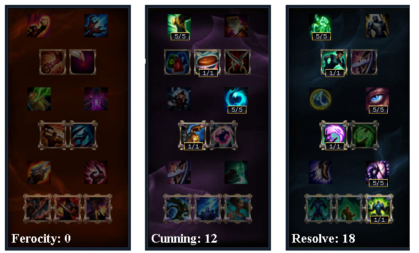

Starting Items:

Core Items:
Optional Items:
Thresh, given tanky runes and some AD damage is actually pretty strong early. His kit is already really good all you need to do is just make sure your team benefits from the items you get. For my Thresh build, It is crucial you get a Solari or a Frozen Heart. This grants your team a bit of an advantage in teamfights. Solari grants a team mini-shield and Magic Resistance while Frozen Heart reduces nearby enemy’s attack speed by 15%. Remember, supports are supposed to be selfless. You don’t support only one person late game, but pretty much everyone. Obviously your main concern is your ADC, but keeping your team in check is always your job.
Face of the Mountain should generally be your first ompleted item. The reason why I think it is so important for Thresh is because it offers a great stats: health is great to get more tankier and. cooldown reduction (CDR) is great because it means less waiting time in between skills. Eye of the Equinox is downright terrible. Righteous Glory is a great option item and the active comes very handy in many situations. If your team is having trouble forcing engages, creating picks or catching up to your enemies overall, this item can solve it.
Masteries:
Tips:
- Try to predict movement abilities like dashes. The trick is to analyze someone’s behavior while laning. Point your hook to predict where they will be going next when you start winding up. Or you can force them out, by hooking them in the direction where you predict they are going to dodge. This requires you to observe your opponent’s movement patterns. This skill requires practice and may take some time to sink in but it’s totally worth it.
- Use your lead to your advantage! If you have a lead zone your enemy to the point they lose a lot of cs. When the lane is somewhere in the middle or pushed towards you, you can walk forward when the enemy tries to go for a cs at which point they can lose the cs and dodge the hook or take the cs and the hook. When you cast your hook the moment he starts his attack animation (especially with low attack speed) he has a low chance of dodging the hook.
- If you have a lead, try to zone the enemy when he tries to last hit creeps. The process is very simple: when the lane is somewhere in the middle or pushed towards you, you can walk up whenever the enemy tries to go for a cs at which point he has two options: lose the cs and dodge the hook or take the cs AND the hook. When you cast your hook the moment he starts his attack animation (especially with low attack speed it takes some time for this animation to complete) he has no chance of dodging the hook.
- Use your full skill set. If you can get in range for a Flay, flay instead of hooking, try to use flay first to apply the slow and bring your enemy closer to you and then wait for your enemy to make a move before using your hook. Take note: Getting close to use flay is also very risky on your part and you may suffer damage in return.
- Keep in mind the risks associated with this though: Flay has relatively short range and walking up for it can cause you to take a lot of damage in return.
- Play it smart! Just try to think before you hook. Think ahead. Know where your enemy wants to dodge, if they have flash available and what are their cooldowns.